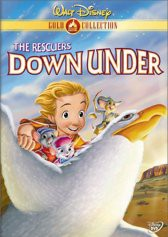

#2436 Bernard und Bianca im Känguruhland
Alternativ: The Rescuers Down Under
 
 IMDB-Wertung: 6.9 / 10
IMDB-Wertung: 6.9 / 10  Metascore: 70
Metascore: 70 
Sie sind wieder da! Die beiden berühmten Mäuse Bernard und Bianca folgen diesmal einem Hilferuf aus dem fernen Australien: "Der kleine Cody wurde entführt!" Unsere beiden kleinen Detektive, Bernard und Bianca, zögern nicht lange und machen sich mit der Albatros-Fluglinie sofort auf die große Reise zum fünften Kontinent. Mit Hilfe von Jake, dem Buschmäuserich, kann nun die abenteuerliche und gefährliche "Befreiungsaktion Cody" aus den Händen des bösen Wilderers McLeach beginnen. Disneys Meisterwerk "Bernard und Bianca im Känguruhland" - voll spannender Abenteuer und mit vielen neuen, zauberhaften Stars!
Jahr: 1990
Dauer: 77 Minuten
FSK: 0
Land: USA Studio: ABCTonspuren: DTS - ,
Untertitel: Deutsch,
Auflösung: 1080p (1808x1080) Größe: 8765 MB
Genre: Drama, Abenteuer, Fantasy, Krimi, Animation/Trick, Familie, Mystery
Regisseur:  Hendel Butoy, Mike Gabriel
Hendel Butoy, Mike Gabriel
Drehbuch: Jim Cox, Karey Kirkpatrick, Byron Simpson, Joe Ranft, Joe Ranft
Soundtrack: Bruce Broughton
Darsteller:
Datei: X:\Kinder Disney HD\Bernard und Bianca\Bernard und Bianca im Känguruhland (1990, FSK0, 1808x1080).mkv seit 10.11.2015
Festplatte: Kinder-Filme+Trick
 Alle Filme aus Gruppe 'Kinder Disney HD\Bernard und Bianca'
Alle Filme aus Gruppe 'Kinder Disney HD\Bernard und Bianca'